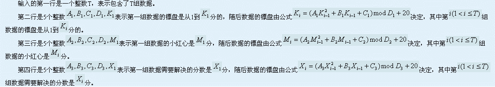
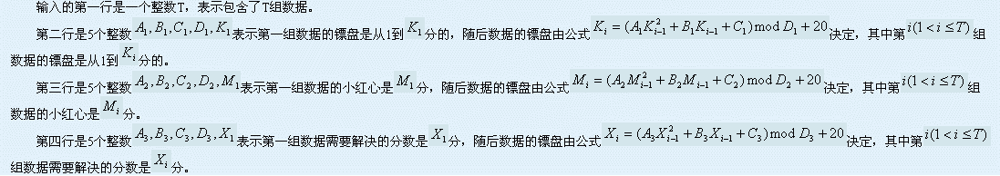

飞镖是在欧洲颇为流行的一项运动。它的镖盘上分为20个扇形区域，分别标有1到20的分值，每个区域中有单倍、双倍和三倍的区域，打中对应的区域会得到分值乘以倍数所对应的分数。例如打中18分里面的三倍区域，就会得到54分。另外，在镖盘的中央，还有“小红心”和“大红心”，分别是25分和50分。
通常的飞镖规则还有一条，那就是在最后一镖的时候，必须以双倍结束战斗，才算获胜。也就是说，当还剩12分的时候，必须打中双倍的6才算赢，而打中单倍的12或者三倍的4则不算。特别的，“大红心”也算双倍(双倍的25)。在这样的规则下，3镖能解决的最多分数是170分(两个三倍的20，最后用大红心结束)。
现在，lxhgww把原来的1到20分的分值变为了1到K分，同时把小红心的分数变为了M分(大红心是其双倍)，现在lxhgww想知道能否在3镖内（可以不一定用满3镖）解决X分。同样的，最后一镖必须是双倍（包括大红心）。

一行，包括一个数字，表示这T组数据中，能够被解决的数据数目。
5
1 2 2 10 20
1 3 2 15 25
2 2 5 200 170
4
1<=T<=1000000,20<=K1,M1,X1,D1,D2,D3<=10^9
0<=A1,B1,C1,A2,B2,C2,A3,B3,c3<=10^9